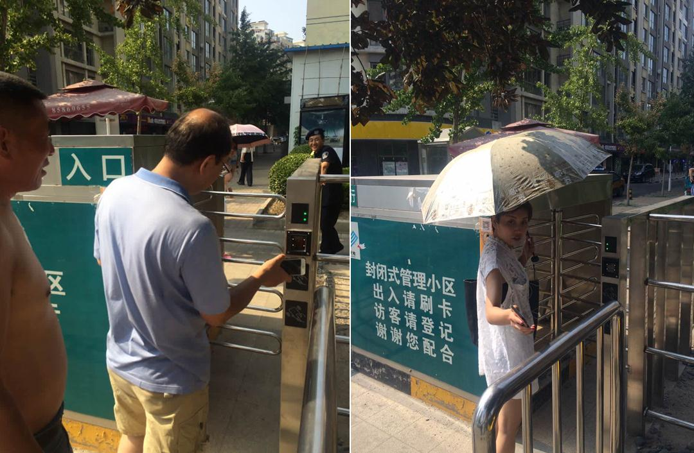

发布时间：2016-08-03 来源： 阅读量： 130
1、业主需要去物业服务中心登记领取门禁卡，比较麻烦；
2、忘记带卡需要找安保人员登记；
3、物业公司无法统计业主持卡数量。
1、业主方便、快捷，不需要带门禁卡；
2、独具匠心、新颖的开门方式；
3、方便物业统一管理；
4、省去物业公司购买门禁卡的成本。
1、增加摇摇开门使用率与平台活跃度，增加业主装机率，提高项目认证率。 选取标杆项目执行，若数据、推广效果提升较大，将其模式复制到其他安装摇摇开门的项目；
2、时间：2016年6月24日-2016年7月24日。

1、每个项目选取一个门（有两个入口），将其中一个门的门禁卡设备停用， 并标注明显告示（此门仅支持手机摇摇开门字眼）；
2、项目自行选取重点推广位置，该位置要求至少两位安保人员；
3、推广期间，停止为无门禁卡穿行人员代刷门禁卡，无卡人员必须拜访人员登记，安保人员可通过DM传宣单引导客户下载亿街区摇一摇开门；
4、活动期间摇摇开门功能每增加一个新用户（重复无效），项目安保部将获得现金奖励（与上一个月使用人数相比）（包含个税）：
1）增加100人以下，无奖励；
2）增加100人-500人，2元/人；
3）增加500人-1000人，3元/人；
4）增加1000人以上，4元/人；
5、亿街区以周为单位监控数据变化以及推广过程中的问题；
6、物料支持：亿街区免费提供3000张DM单供安保人员在大门处发送给客户。免费提供“此门仅支持手机摇摇开门告示牌”。